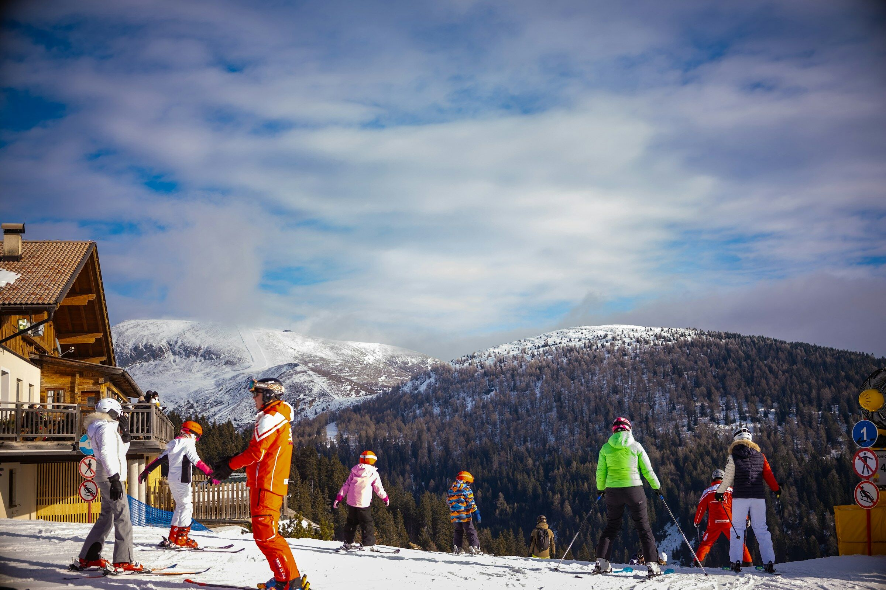

Your 2027 Offsite Calendar: When to Go and When to Book
A month-by-month guide to planning company retreats in 2027: the best destinations for each season, peak periods to avoid and when to book.
Timing changes everything: weather, prices, venue availability and flight costs. Here is our month-by-month guide to planning your 2027 retreat in Europe, with when to book each window.
January and February
Best for: sales kickoffs, winter sun, snow. Where: Madeira, Seville, the Algarve, Taghazout, or the mountains in Zakopane. Book by: September or October of the previous year. Watch out for: February school holidays in ski resorts.
March and April
Best for: great-value retreats as spring arrives. Where: Lisbon, Marrakech, Crete from late April. Book by: December or January. Watch out for: Easter, which falls on 28 March 2027. Expect busy flights and venues around it.
May and June
Best for: the classic retreat window, with warm weather and long days. Where: almost anywhere in southern Europe: Mallorca, Ericeira, Athens, Tuscany, the Peloponnese. Book by: January to February. These months fill first. Watch out for: public holidays such as Ascension and Whit Monday in several countries.
July and August
Best for: northern and mountain destinations, or flexible teams. Where: Gdańsk, Zakopane, the Azores. Book by: February to March. Watch out for: peak prices and heat in southern Europe; many people are on holiday.
September and October
Best for: the second classic window, with warm seas and lower prices than summer. September is one of the most booked months for offsites. Where: the Algarve, Crete, Porto and the Douro for the harvest, Kraków. Book by: March to April.
November and December
Best for: end-of-year retreats, client events and festive cities. Where: Vienna, Prague, Budapest and Kraków for Christmas markets; Marrakech or Madeira for sun. Book by: June to July.
General booking rules
- Under 50 people: book three to six months ahead.
- 50 to 150 people: six to nine months ahead.
- 150+ people or peak dates: nine to twelve months ahead.
- Flights: book eight to twelve weeks before at the latest. Prices rise sharply after that. See our group flights guide.
Use our retreat checklist to plan backwards from your dates.
Secure your 2027 dates
The best venues for May, June and September go first. Talk to our expert to lock in your window and receive 3 proposals with every participant's flight included. Or estimate your budget with our calculator.
Frequently asked questions
What is the best month for a company retreat in Europe?
May, June, September and early October offer the best balance of weather, prices and availability in southern Europe.
When should we book a company retreat for 2027?
Three to six months ahead for small groups, and six to nine months ahead for larger groups or peak months.
When is Easter 2027?
Easter Sunday falls on 28 March 2027. Flights and venues are busier around that weekend in many European countries.
Let's plan your team's next retreat
Venue, programme, activities and every participant's flight, handled by one team. It starts with a call with our expert.
Keep reading
All articles
Company Offsite Trends for 2027
The company offsite trends shaping 2027: purpose-led retreats, smaller and more frequent meetups, shoulder-season travel, local experiences and smarter budgets.

Company Retreat Checklist: 12 Weeks to Departure
A week-by-week company retreat checklist: budget, venue, flights, programme, communication and day-of logistics, so nothing is forgotten.

The Best Winter Offsite Destinations in Europe
Where to hold a company retreat in winter: mild-weather escapes in southern Europe and Morocco, snowy mountain lodges and festive cities, with tips on dates.